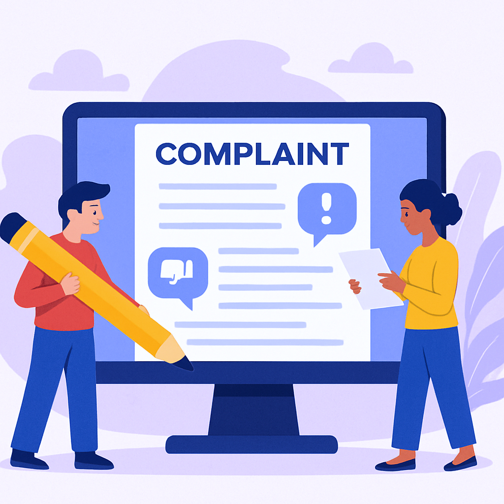

Born from the urgency of the migrant crisis, Migrant Support Hub began as a small community
outreach project...
Design 2
Our Mission
Providing transparent complaint tracking, legal assistance, and access to essential
services...
Design 3
Our Vision
Creating a world where migration is safe, dignified, and a pathway to opportunity rather than
struggle.

Design 4
Complaint Registration
File complaints easily and track their progress with our digital complaint registration
system.
Our Journey
Migrant Support Hub Tamil Nadu was created to address the unique challenges faced by migrant workers across
the state. Recognizing the urgent need for accessible resources and support, our project aims to empower
migrants through technology and community engagement.
Since the start of this final year project, we have:
Researched the critical issues affecting migrant workers in Tamil Nadu, including legal, social, and
economic barriers.
Developed a user-friendly web platform for complaint registration, real-time tracking, and assistance
services.
Integrated multilingual support, including Tamil, Hindi, and English, to reach diverse migrant
communities.
Organized awareness campaigns and digital workshops to educate migrants on their rights and available
government schemes.
Our journey continues as we strive to expand the platform’s reach and impact, making a meaningful difference
in the lives of migrants throughout Tamil Nadu.
Our Mission
Our mission is to create a trusted, accessible platform that empowers migrant workers across Tamil Nadu by
providing essential support services. We believe that every migrant deserves dignity, safety, and a voice.
Through this platform, we aim to:
Enable easy and confidential complaint registration to address workplace and social issues promptly.
Offer real-time tracking of complaint status, ensuring transparency and peace of mind.
Provide free legal support and guidance to help migrants navigate their rights and resolve disputes.
Maintain a 24/7 helpline number staffed by trained professionals offering immediate assistance and
counseling.
Educate migrants about their rights, available services, and how to access help when needed.
Our Vision
We envision a Tamil Nadu where every migrant worker feels safe, supported, and empowered to build a better
future. Migration should be a pathway to opportunity, free from fear and discrimination.
Our long-term vision includes:
Creating a reliable, Tamil Nadu-wide platform for complaint registration and support for migrants.
Ensuring transparent tracking and quick resolution of issues faced by migrant workers.
Providing accessible legal aid and helpline services throughout the state.
Partnering with local authorities, NGOs, and communities to promote safe and dignified migration.
Raising awareness about migrant rights and fostering social inclusion within Tamil Nadu.
Building sustainable support systems that respond to the evolving needs of migrant communities.
Complaint Registration
If you are facing threats, unsafe working conditions, poor living conditions, health issues, legal problems,
or need emotional support, you can register your complaint safely and confidentially using this form.
How to register your complaint:
Click on the “New Complaint” button from the dashboard or the menu.
Fill in the required details such as your full name, email, complaint category, and a detailed
description.
Optionally, you may upload supporting documents or mention any witnesses involved.
Specify the outcome you expect or how you'd like the issue to be resolved.
Submit your complaint — our team will review and respond as soon as possible.
Each complaint is treated with strict confidentiality. After submission, you will receive a unique Complaint
ID to track your case. Our support team may contact you for follow-up if necessary.
Tracking Support
After submitting your complaint, you will receive a unique Complaint ID. You can use this
ID to track the status of your complaint anytime through our complaint tracking page or dashboard.
Our system ensures transparency by providing real-time status updates. You will also receive notifications
through email or SMS (if contact details were provided).
Here’s what you can do with your Complaint ID:
Check the current status of your complaint (e.g., Received, In Review, In Progress, Resolved).
Request updates through our chatbot or by contacting our support email.
Connect with a support officer for clarification or urgent help.
See the estimated resolution timeline and upcoming actions.
Review the history of all complaints you’ve submitted and their outcomes.
We are dedicated to resolving each complaint fairly, and we’ll keep you informed at every step of the
process.
Legal Support
Migrant workers in Tamil Nadu often face legal challenges related to employment, documentation, or local
issues. Our legal support service is designed to assist you by providing basic and accessible help.
Free legal guidance on workplace issues and rights violations.
Help with drafting and understanding legal complaints or documents.
Support in approaching local authorities or filing complaints at police stations.
Referrals to nearby legal aid centers or NGOs offering assistance.
Awareness materials on labor rights and basic legal protections available in Tamil Nadu.
We aim to ensure that no migrant is left unsupported in the face of legal difficulties. All support is
provided with confidentiality and respect. Reach out to our team to get the help you need.
Helpline Number
Our helpline operates 24/7 to offer you assistance when you need it most. Whether it’s an emergency or
general inquiry, you can reach us anytime.
Call us at:+91 98765 43210
Available in Tamil, Hindi, English, and other regional languages. Our trained support staff will listen to
your concerns and connect you with the right resources.
Immediate help for emergencies and urgent cases.
Information on shelter, food, healthcare, and transportation.
Guidance on legal and documentation issues.
Emotional support and counseling services.
Email Support
Prefer to communicate in writing? Email our team and get personalized responses to your questions,
complaints, or suggestions.
Email us at:support@migranthub.com
We respond within 24 hours and prioritize emergency emails. Attach any relevant documents for quicker
resolution.
Describe your issue in detail for a faster response.
Attach photos, documents, or evidence if available.
All emails are treated with strict confidentiality.